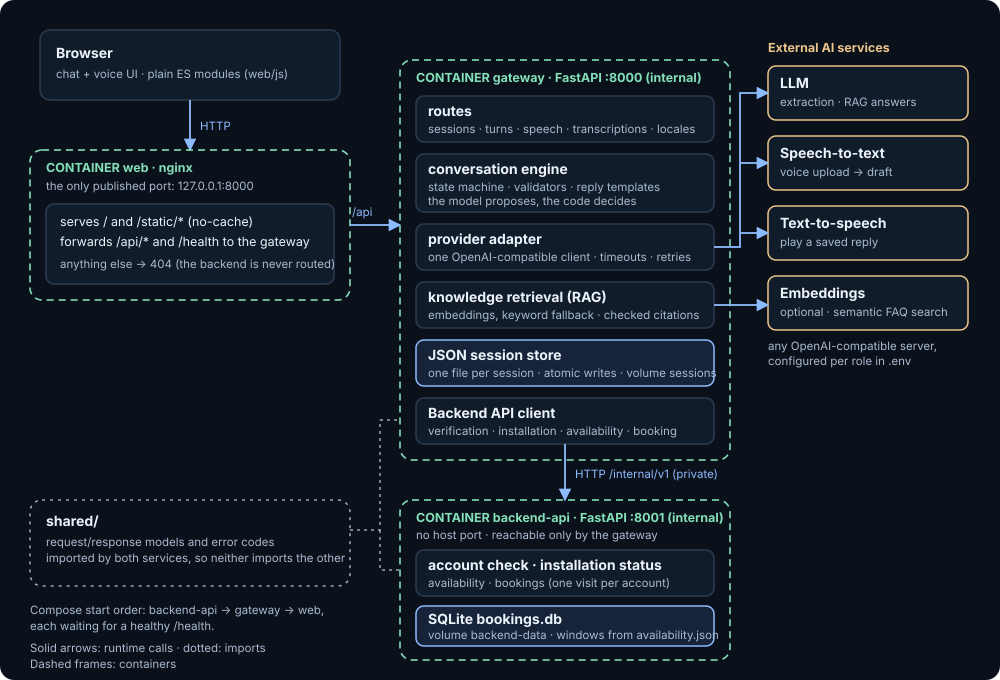

nginx and the page
Serves index.html, css/ and js/ with no-cache, so a redeploy is picked up. Forwards /api/ and /health to the gateway; every other path is a 404. The page fetches its English text from /api/locales/en at start.
An nginx container serves the page and is the only public entry point. The gateway runs the conversation and talks to the AI services. The backend-api holds the account and booking data and is reachable only from the gateway. Both services import the same models from shared/.

Serves index.html, css/ and js/ with no-cache, so a redeploy is picked up. Forwards /api/ and /health to the gateway; every other path is a 404. The page fetches its English text from /api/locales/en at start.
routes/ take the HTTP calls, conversation/ holds the state machine and validators, providers/ the model adapter, knowledge/ the retrieval, storage.py one JSON file per session. Replies come from templates; the model only extracts facts and answers FAQ questions.
Checks the demo credentials, reports installation status and offers technician windows. Bookings live in a SQLite file; the database refuses a taken window and a second visit for the same account. Windows come from availability.json.
/api/sessions/{id}/turns; nginx forwards it.shared/, and each image carries just its own code..env.Run it with docker compose up --build -d --wait --wait-timeout 120 and open http://127.0.0.1:8000. See the README and startup.md for configuration and tests.